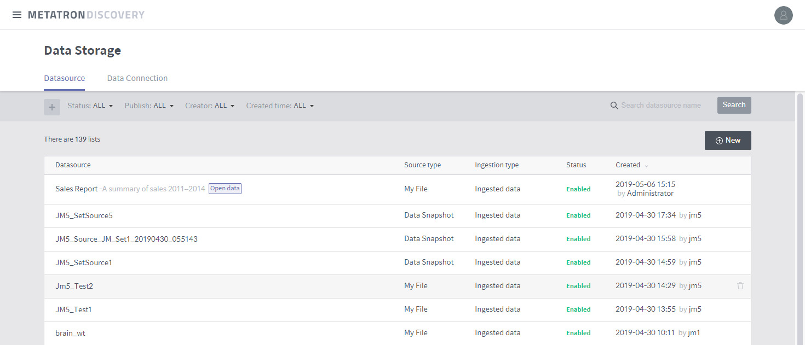

Data source management home¶
On this home page, you can create, edit and view data sources.

Status: Filters the data source list by the availability of data sources stored in the data storage.
Enable: Displays data sources that have been ingested and are available in workbooks or workbenches.
Preparing: Displays new data sources whose ingestion is in progress.
Failed: Displays data sources that have not been created properly.
Disabled: Displays data sources that have been ingested but are not available because of an error in a certain Druid process.
Publish: Filter the data source list by public workspace.
Open Data: Displays only data sources publicly available in all workspaces.
Admin Workspace: Displays only data sources available in the administrator workspace.
Shared workspaces: Displays only data sources available in the selected shared workspaces.
Creator: Filters the data source list by user or group that created the source data.
Created time: Determines whether the data source list is filtered by created or updated time. You can choose from among All, Today, and Last 7 days or specify a time range to display only those entries that were created/updated within the range.
Search by name of data source: Searches the data source list for the name you type in.
Data source list: Lists data sources filtered by specified criteria. Click an entry in the list to view its details. (Refer to Data source details)
Delete: Hover the mouse over a data source to display a trash icon. Click the icon to delete the data source.